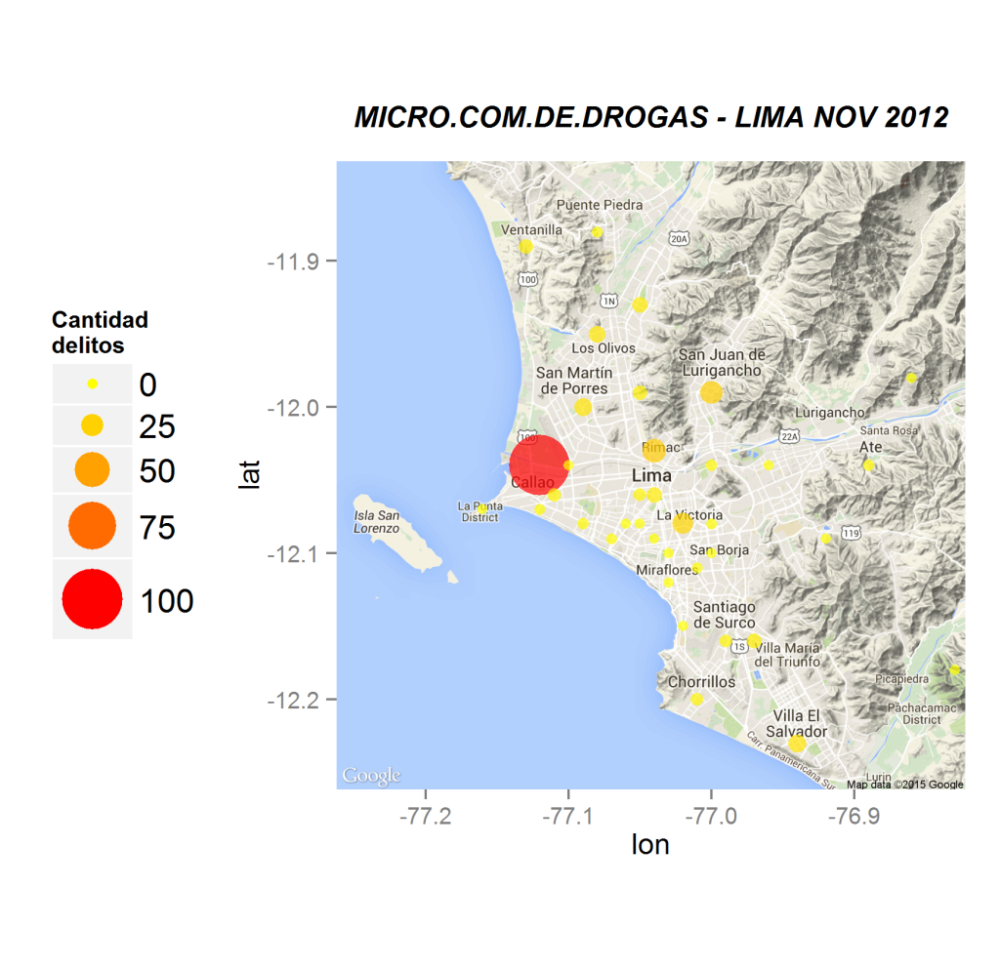

Mapa delicuencial de Lima
Por tipo de delito
Este último mes tuve un poco más de tiempo libre y aproveché para avanzar con este proyecto que tenía en mente desde hace unos meses.
Una de las cosas que impulsó a terminar este post fue la cantidad enorme de asaltos y asesinatos, principalmente en San Juan de Lurigancho en mayo.
Lo primero que me pregunté fue: ¿Cómo está la situación en los demás distritos? Para esto fui a ver qué información podía obtener de la web de la PNP. Y lo que encontré no me ayudó mucho, pero eran datos -y necesitaban una mejor presentación para arrojar una respuesta a mi pregunta-.
Si bien la data no es muy actual, creo que nos ayudará a entender cómo se distribuyen los actos delictivos en los distritos de Lima.
Data:
Los datos los extrajimos de aquí:
PNP - Estadística delicuencial - Nov 2012Y convertimos la data a Excel, utilizando este programa:
ConigViewSobre la data:
Contiene 15 columnas (originalmente 13, se añadieron Longitud y Latitud, manualmente -Gracias Google Maps), y 129 observaciones (entradas).
La data solo representa los delitos denunciados, la cantidad probablemente fue mayor en Nov 2012 (¡por favor, hagan sus denuncias!)
'data.frame': 129 obs. of 15 variables:
$ UNIDAD.PNP : chr "DIV.T. NORTE 1" "DIV.T. ESTE 1" "DIV.T. ESTE 2" "DIV.T. NORTE 2" ...
$ PROVINCIA : chr "LIMA" "LIMA" "LIMA" "LIMA" ...
$ DISTRITO : chr "LOS OLIVOS" "SAN JUAN DE LURIGANCHO" "ATE" "INDEPENDENCIA" ...
$ LATITUD : chr "-11.946155" "-11.987993" "-12.038215" "-11.992879" ...
$ LONGITUD : chr "-77.077962" "-76.996715" "-76.890494" "-77.050349" ...
$ COMISARIA : chr "Laura Caller" "Santa Elizabeth" "Vitarte" "Independencia" ...
$ TOTALES : int 355 344 328 300 281 212 206 190 189 188 ...
$ HOMICIDIOS : int 0 0 0 0 0 0 0 1 0 0 ...
$ LESIONES : int 33 56 23 34 4 5 4 21 15 7 ...
$ VIO..DE.LA.LIBERTAD.PERSONAL: int 0 0 0 0 0 0 0 2 5 1 ...
$ VIO..DE.LA.LIBERTAD.SEXUAL : int 2 9 3 6 6 3 2 3 4 7 ...
$ HURTO.SIMPLE.Y.AGRAVADO : int 224 110 161 103 125 138 54 85 58 120 ...
$ ROBO.SIMPLE.Y.AGRAVADO : int 87 164 141 154 136 66 140 78 103 51 ...
$ MICRO.COM.DE.DROGAS : int 9 4 0 3 10 0 6 0 4 2 ...
$ TENENCIA.ILEGAL.DE.ARMAS : int 0 1 0 0 0 0 0 0 0 0 ...
Objetivos:
- ¿Qué distrito registra más delitos contra la seguridad ciudadana? ¿Qué días y a qué hora se dan estos delitos (por tipo de delito)?
- ¿Qué tipo de delito es más frecuente por distrito?
- ¿Qué comisaría registra la mayor cantidad de denuncias?¿A qué distrito pertenece? Tener en cuenta la población total del distrito (Falta).
Información que me gustaría saber (sobre la cual no encuentro fuentes):
- ¿Cantidad poblacional por distrito? Ratio sobre denuncias. (Falta: información no se encuentra en el data set)
- ¿Cantidad de policías asignados por comisaría/ distrito? (Falta: información no se encuentra en el data set)
-
Observaciones:
-
No se encuentra data sobre "Villa María del Triunfo" en la fuente original.
Gráficos por tipo de delito
Mapas Lima Metropolitana según delitos:
Lima nov 2012: Total delitos
Lima nov 2012: Drogas Callao
Lima nov 2012: Drogas No-Callao

Lima nov 2012: Homicidios
Lima nov 2012: Hurtos
Lima nov 2012: Lesiones
Lima nov 2012: Robo (simple y agravado)
Lima nov 2012: Secuestros

Lima nov 2012: Violaciones
library(maps)
library(ggmap)
library(extrafont)
library(dplyr)
### Read data in ###
limanov2012 <- read.csv2("nov2012.csv", stringsAsFactors = F, header = T)
### get map from Google Maps ###
lima <- get_map(location = "lima", zoom = 11, maptype = c("terrain"))
### Convert Longitud and Latitud from Characters to Numbers ###
limanov2012[,4] <- round(as.numeric(as.character(limanov2012[,4])),2)
limanov2012[,5] <- round(as.numeric(as.character(limanov2012[,5])),2)
### Group data by DISTRITO - SUM DELITOS ###
limanov2 <- limanov2012 %>%
group_by(DISTRITO) %>%
summarise(TOTALES = sum(TOTALES),
HOMICIDIOS = sum(HOMICIDIOS),
LESIONES = sum(LESIONES),
VIO..DE.LA.LIBERTAD.PERSONAL = sum(VIO..DE.LA.LIBERTAD.PERSONAL),
VIO..DE.LA.LIBERTAD.SEXUAL = sum(VIO..DE.LA.LIBERTAD.SEXUAL),
HURTO.SIMPLE.Y.AGRAVADO = sum(HURTO.SIMPLE.Y.AGRAVADO),
ROBO.SIMPLE.Y.AGRAVADO = sum(ROBO.SIMPLE.Y.AGRAVADO),
MICRO.COM.DE.DROGAS = sum(MICRO.COM.DE.DROGAS),
TENENCIA.ILEGAL.DE.ARMAS = sum(TENENCIA.ILEGAL.DE.ARMAS),
LONGITUD = mean(LONGITUD),
LATITUD = mean(LATITUD)) %>%
arrange(-TOTALES)
### Graphic TOTALES ###
ggmap(lima) + geom_point(data = limanov2, aes(x = LONGITUD , y = LATITUD, color = TOTALES,
size = TOTALES), alpha = 0.7) +
scale_size_continuous(name = "Cantidad\ndelitos",range = c(2,12)) +
scale_color_gradient(name = "Cantidad\ndelitos", low = "yellow", high = "red") +
theme(legend.text= element_text(size=14)) +
ggtitle("TOTAL DELITOS - LIMA NOV 2012") +
theme(plot.title = element_text(size = 12, vjust=2, family="Verdana", face = "bold.italic"),
legend.position = 'left') +
guides(colour = guide_legend(override.aes = list(alpha=1)))
ggsave("limanov2012-total-delitos.png")
UPDATE 1 (09/07/2015):
Encontré un blog con una técnica similar, pero que recoge la longitud y latitud con un for loop. Vamos a revisarlo:UPDATE 2 (06/08/2015):
Hace poco un canal de noticias publicó un mapa delincuencial de Lima. La intención fue buena, la ejecución no tanto.
Este mapa tiene 2 problemas principales:
El símbolo utilizado no representa la cantidad de eventos por distrito:
No se distingue qué distritos son los que registran mayor actos delincuenciales (todas las pistolas son del mismo tamañano y color).
No se demilitan bien los distritos
El hecho de acumular los símbolos sobre los distritos dificulta reconocer qué distritos son los más afectados.